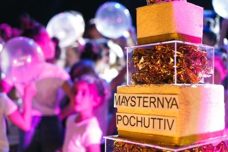
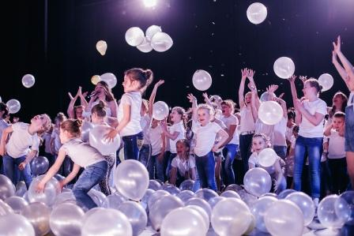
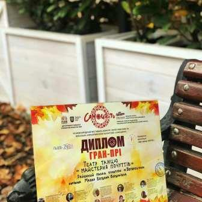
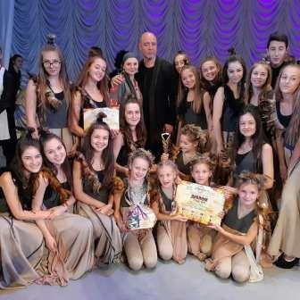

 
Днями театр танцю «Майстерня почуттів» Богородчанського РПК провів святковий творчий вечір. До цього часу
театр
був знаний, як «Фієста», а тепер дебютував з новою назвою.
Керівник «Майстерні почуттів» – Богдана Макар, талановита творча особистість, яка створює глибоко філософські
танцювальні постановки. Серед її робіт:


З 19 по 22 жовтня у м. Львові відбувся VII Міжнародний фестиваль-конкурс хореографічних та
вокально-хореографічних колективів «Самоцвіти». У конкурсі взяли участь понад 100 колективів з різних куточків
світу. Оцінювали фестиваль-конкурс люди, які віддали мистецтву танцю все своє життя. Головою журі був всім
відомий хореограф Раду Поклітару. Приємно відзначити, що театр танцю «Майстерня почуттів» («Фієста») (керівник
Богдана Макар) Богородчанського районного Палацу культури став володарем гран-прі. Голова журі підкреслив, що
танцювальна композиція «Зозулина доля» – це не просто танець, це мистецтво з великої літери, це їхній пульс,
биття їхнього серця, їхнє дихання, їхня істина…
Адреса:
Богородчанський РПК
вул.Шевченка, 65
смт.Богородчани
Богородчанський район
Івано-Франківська обл.
Керівник:
Богдана Макар - 0966226109